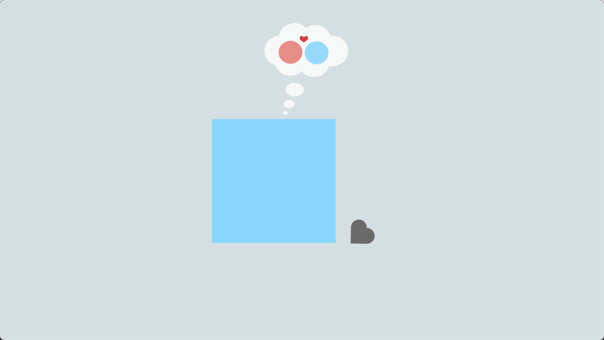
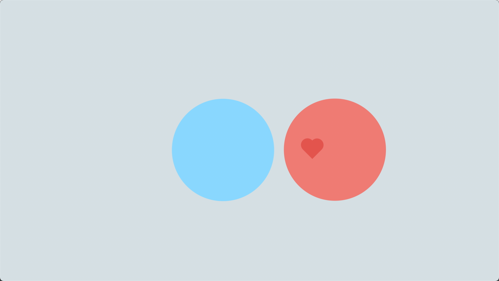
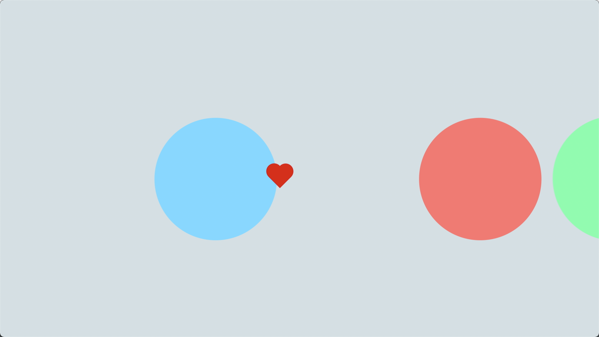
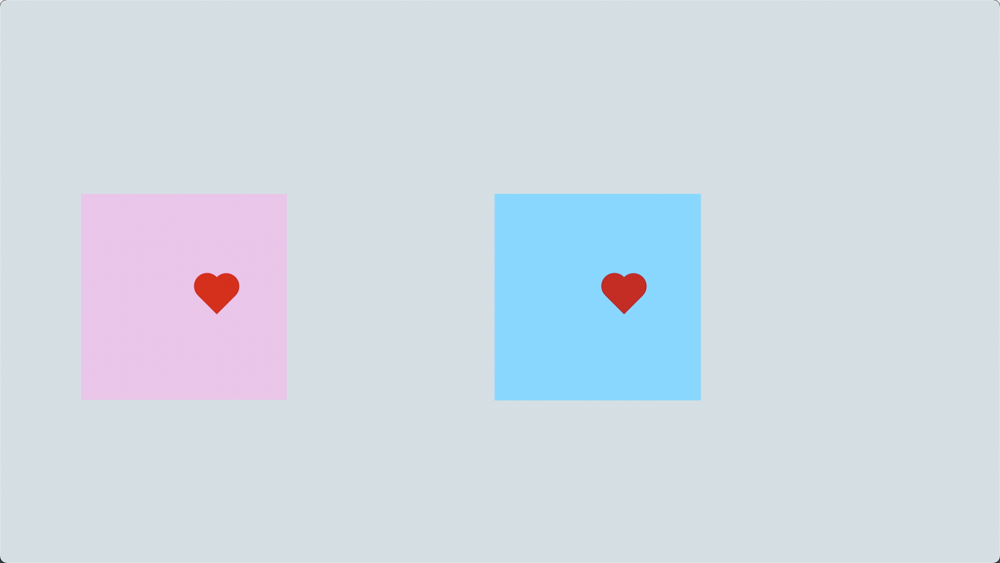

As the circle shows, it has its own ideal object in its heart, so it clearly rejected the square at the beginning. In fact, the circle represents many of us, and we all have a general understanding of what is really suitable for us.
When falling in love, the square feels that it can transform itself into what the circle wants; then it makes the wrong choice - changing its shape to suit the circle's needs. The wrong understanding of the square, just like many people who fall in love.
The square changed its appearance, holding the heart and dedicating it to the circle, and the circle accepted it. The choice made by the circle is the choice many people would make before meeting their ideal partner. After all, it is undeniable that the square changed itself for love is definitely a moving fact.
However, moving is moved, but it may not necessarily bring happy results. You need to know that no matter how you change your appearance, your true self will always be revealed in getting along with each other, and the places that don't fit and don't blend will always be exposed. When it is no longer possible to whitewash the peace, they will eventually separate.
After a failed attempt, the circle returns the heart to the square. The appearance of the green circle brings an end to this "inappropriate" love. The circle moves towards the green circle, which shows that people will eventually go to what they really want in their hearts. The injured square will slowly change back to its true self over time, just like many people who have been injured in love.
The square finally met the other half who was really suitable for it. Having met unsuitable people, made wrong choices, and been hurt, people will eventually understand that hiding their true self cannot make them truly happy, and the one who can accept the truest self is the right person .